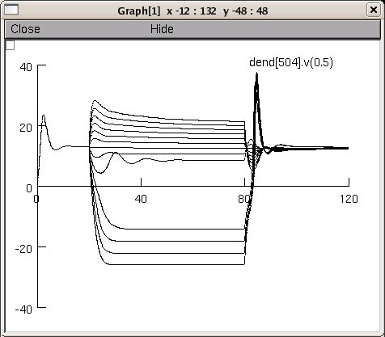

This is the readme for this model that tries to mimic the VS model illustrated in the papers by Borst and Haag (1996,1997, et al. 1999) 1. Borst A, Haag J (1996) The intrinsic electrophysiological characteristics of fly lobula plate tangential cells: I. Passive membrane properties. J Comput Neurosci 3:313-36 2. Haag J, Vermeulen A, Borst A (1999) The intrinsic electrophysiological characteristics of fly lobula plate tangential cells: III. Visual response properties. J Comput Neurosci 7:213-34 3. Haag J, Borst A (1997) Encoding of visual motion information and reliability in spiking and graded potential neurons. J Neurosci 17:4809-19 Executing this model will produce a figure similar to fig 10 from Haag 1997.  Created by B. Torben-Nielsen (TENU @ OIST) and Ted Carnevale 2009-01-20 There are key unresolved differences between the published model and the NEURON implementation. The published model's damped oscillations occur when the low- to moderate- amplitude depolarizing currents are injected; in the NEURON implementation, they are triggered by low-amplitude hyperpolarizing currents. The published model responds fairley linearly to a wide range of hyperpolarizing currents; the NEURON implementation shows a quite nonlinear jump to negative membrane potentials when medium to large hyperpolarizing currents are injected. The published model's resting potential is 0; the resting potential of the NEURON implementation is nonzero and nonuniform. The NEURON implementation's resting potential can be forced to zero everywhere by adjusting e_pas in each compartment so that i_pas cancels out the contributions of local Na and K currents; however, the resulting model's responses to injected depolarizing and hyperpolarizing currents diverge even more from those of the published model. Moreover,there is still an unresolved issue concerning the time constants. According to Borst, these are not scaled/normalized in figure 8 (f,g) from the 1997 paper. This implies that our time constants are tau_max times to large. When contacted, Borst was positive about the constructed model. The discrepancies are likely due to (1) the morphology and (2) the distribution of the voltage-gated channels. Recall that (i) the morphology is coming from neuromorpho.org; a curated database in which they "repair" morphologies. A different morphology leads to a different outcome (especially since the tiny branches are close to the axon). (ii) the description of the location of the voltage-gated channels is rather vague. Clearly this may effect the outcome as well. (Qualitatively the results are similar, quantitatively, there are some discrepancies).